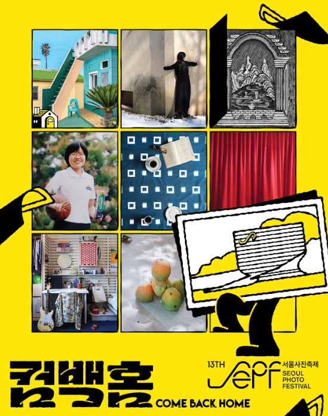
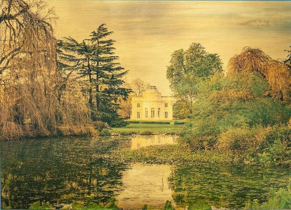
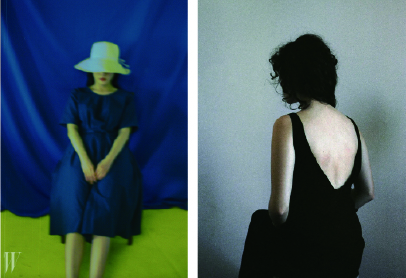

사진은 결국 어딘가에 가서 봐야 한다. 화면 속에서 스쳐 지나가는 이미지와 전시장에 걸린 한 장의 프린트는 다른 시간을 흐른다. 5월의 미술관 네 곳에서, 서로 다른 빛으로 머무는 작업들이 우리를 기다린다.
봄이 짧기에 미술관은 부지런해진다. 사진가들은 각자의 시선을 한 자리에 모으고, 우리는 그 사이를 천천히 걸어 다녀야 할 5월이다. 같은 시간 위에 펼쳐진 네 개의 전시 — 집, 얼굴, 도시, 그리고 카메라가 만들어내는 이미지까지.
집이 마음을 기댄 자리가 될 때

서울사진축제 2026 〈컴백홈〉이 서울시립 사진미술관에서 열리고 있다. 4월 9일부터 6월 14일까지. 집이라는 단어가 품은 여러 두께가 있다. 거주의 공간, 그리고 그 위에 켜켜이 쌓이는 시간과 관계. 이 전시는 사진이 그 두께를 어떻게 들여다보는지를 묻는다.
여러 작가의 시선을 따라가다 보면, 집은 더 이상 건물이 아니라 누군가의 마음이 기댄 자리가 된다. 문고리 하나, 벽에 새겨진 부조 하나, 닫힌 셔터 너머의 흔적까지 — 익숙한 사물이 다시 낯설어지는 순간들이 모여 있다.
얼굴 위에 쌓인 시간을 본다는 것
경기사진센터(GCP)의 개관 특별전 〈빛나는 얼굴들 — 아이콘에서 우리로〉는 3월 28일부터 8월 9일까지 이어진다. 한 사람의 얼굴을 본다는 것은 무엇일까. 이 전시는 표정이 아니라, 얼굴 위에 켜켜이 쌓인 시간과 누군가의 기억을 응시한다.
아이콘에서 우리로 — 그 거리는 생각보다 가깝다. 우리가 누군가를 기억하는 방식, 한 사람의 이미지가 만들어지는 과정. 그 사이를 따라가는 동안 인물 사진이 단순한 초상이 아닌, 삶의 두께를 담아내는 그릇이라는 사실을 새삼 깨닫게 된다.
우리가 알던 파리의 뒤편

성곡미술관에서 4월 3일부터 7월 26일까지 만날 수 있는 〈동시대 프랑스 사진전 — 파리, 보이지 않는 파리〉. 관광지로서의 파리는 너무 익숙하다. 화려한 카페, 에펠탑, 센강의 다리 — 우리가 떠올리는 파리는 대체로 그 풍경 안에서 멈춰 있다.
이 전시는 그 익숙함 뒤에 숨은 파리를 꺼낸다. 퐁피두센터 사진부장을 역임한 알랭 사야의 협력으로 기획된 이 전시는, 사진과 영상, 다양한 표현을 통해 우리가 알던 도시 위에 새로운 결을 덧입힌다. 한 도시를 안다는 것이 얼마나 부분적인 일인지를 깨닫게 하는 자리.
사진이 도구가 아닌 해석이 될 때

최랄라의 개인전이 6월부터 8월까지 하우스 오브 포토그래피 서울에서 열린다. 사진과 회화가 만나는 자리에서 강렬한 색채와 인물이 화면을 채운다. 카메라를 단순한 기록 장치가 아닌, 해석의 매개로 다루는 작업.
강한 컬러 배경 앞에 자리한 인물, 의도적으로 흐려진 초점, 회화처럼 정돈된 구성. 이 모든 것이 사진이라는 매체가 무엇을 만들어낼 수 있는지 — 기록을 넘어 어디까지 갈 수 있는지를 우리에게 다시 묻는다.
네 곳, 한 달
- ● 서울사진축제 2026 〈컴백홈〉 — 서울시립 사진미술관 · 4.9 — 6.14
- ● GCP 개관 특별전 〈빛나는 얼굴들〉 — 경기사진센터 · 3.28 — 8.9
- ● 〈파리, 보이지 않는 파리〉 — 성곡미술관 · 4.3 — 7.26
- ● 최랄라 개인전 — 하우스 오브 포토그래피 서울 · 6월 — 8월
네 곳의 미술관, 네 개의 시선. 모두 5월의 어느 주말 안에서 만날 수 있다. 봄이 짧으니 미루지 말 것 — 그것이 사진을 보러 가는 길에서 가장 자주 잊는 사실이다.